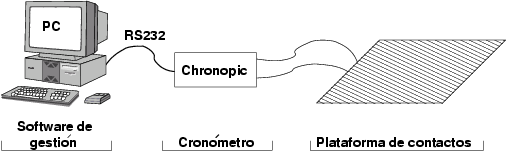

Next: 1 Plataforma de contactos Up: Proyecto Chronojump: Sistema de Previous: 3 Objetivos del proyecto


Next: 1 Plataforma
de contactos Up: Proyecto
Chronojump: Sistema de Previous: 3
Objetivos del proyecto
|
 |
Figure: Arquitectura de Chronojump
En la figura
 se muestran las diferentes partes que componente el sistema
Chronojump: plataforma de contactos, cronómetro y software de
gestión, que corre en un PC.
se muestran las diferentes partes que componente el sistema
Chronojump: plataforma de contactos, cronómetro y software de
gestión, que corre en un PC.
La plataforma de contactos detecta si el sujeto está subido sobre ella. Un sistema de medición, Chronopic, reacciona a los dos eventos que se pueden producir: transición de ON a OFF (deportista ha saltado) o transición de OFF a ON (deportista ha aterrizado) y mide los tiempos transcurridos entre cada uno de ellos, obteniéndose los tiempos de vuelo y de contacto.
Esta información se envía al PC a través de un enlace RS232 estándar, a una velocidad de 9600 baudios, donde es procesada por el software de gestión.